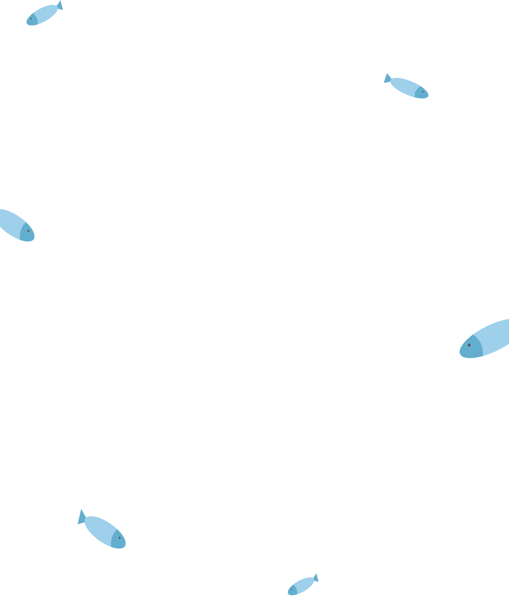

炸蝦
#活潑小太陽
炸蝦是一隻個性活潑、充滿好奇心的公橘貓，已完成結紮手術。牠總是以開朗的態度迎接每一位來訪的客人，用輕快的腳步和淘氣的眼神，融化所有人的心。無論是輕輕撒嬌，還是跳上跳下的玩耍時刻，炸蝦總能帶來滿滿的笑容與溫暖。如果你也渴望在生活中添上一抹陽光，或許，炸蝦就是那位等待你的人生夥伴。

蒲仔
#溫柔小紳士
蒲仔是一隻親人又溫和的公虎斑貓，已完成結紮手術。牠擁有柔順的毛色與靈動的眼睛，總是靜靜地靠近，輕輕用額頭蹭著你的手掌，傳遞屬於蒲仔的溫柔問候。無論是窩在窗邊曬太陽，還是依偎在你身旁打呼，蒲仔都用自己獨有的方式，讓每個相遇的人感受到被需要、被愛的幸福。如果你正尋找一位溫柔的陪伴者，蒲仔正在這裡，靜靜等著你的到來。

喵咪
#優雅小公主
喵咪是一隻個性親人、溫柔體貼的母三花貓，已完成結紮手術。擁有獨特又迷人的三色毛皮，喵咪總是以優雅又親暱的方式靠近你，輕輕蹭蹭或靜靜地依偎在身邊。牠既喜歡撒嬌，也懂得安靜陪伴，像是一朵悄悄綻放的溫柔小花，療癒每一位靠近她的人。如果你正在尋找一位懂得細膩陪伴的夥伴，喵咪或許正是你的命定貓咪。

黑輪
#慢熱小可愛
黑輪是一隻已結紮的母貓，毛色深沉柔順，眼神裡藏著一點警戒，也藏著一點溫柔。她個性膽小，需要時間觀察與適應新環境，但一旦熟悉後，就會默默地靠近你、陪著你，甚至躺在腳邊呼嚕。她不是第一眼就熱情的貓咪，但她的信任特別珍貴。只要你願意耐心陪伴，黑輪會用自己的方式，慢慢走進你心裡，成為生活中最安靜卻最穩定的存在。